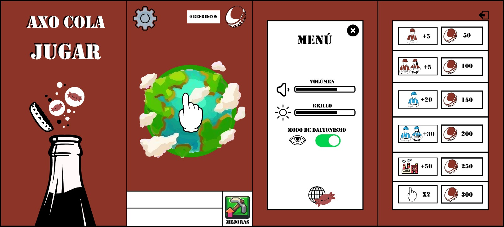

Objetivo
Desarrollar AXO-COLA, es para concientizar a la comunidad sobre el impacto ambiental al desperdiciar agua.

Desarrollar AXO-COLA, es para concientizar a la comunidad sobre el impacto ambiental al desperdiciar agua.
Características básicas de AXO-COLA dentro de su desarrollo
por si te interesan los softwares implementados en este proyecto
Dispositivo móvil
android 5.0 + posteriores
Unity 2022.3.20f1
Adobe Photoshop
Adobe Illustrator
Visual studio code 1.87.0
Aqui se muestran los bocetos e imágenes de los procesos realizados durante este proyecto


.jpeg)
AXO-COLA
INTEGRANTES:
 Guindic Gorostieta Zury Josue
Guindic Gorostieta Zury Josue
 Montoya Lopez Mauricio
Montoya Lopez Mauricio
 Villa Mora Aneliz
Villa Mora Aneliz
 Villagran Cortes Miguel Angel
Villagran Cortes Miguel Angel
 Villegas Vidal Angel
Villegas Vidal Angel
TIPOS DE USUARIOS
Adultos jóvenes entre los 20 y 24 años de edad.
Que jueguen con el celular de forma cotidiana y casual, además de su uso en espacios de descanso o tiempo libre.
TAREAS Y ACCIONES
1. Entrar al juego
 Ícono de aplicación.
Ícono de aplicación.
Acciones:
 Tocar el ícono del juego en la pantalla.
Tocar el ícono del juego en la pantalla.
2. Entrada a las configuraciones
 Botón con ícono de tuerca.
Botón con ícono de tuerca.
Acciones:
 Tocar BOTÓN con ícono de tuerca.
Tocar BOTÓN con ícono de tuerca.
 Tocar BOTÓN a elección del usuario.
Tocar BOTÓN a elección del usuario.
3. Botón para página del juego
 Botón configuración.
Botón configuración.
 Botón página web.
Botón página web.
Acciones:
 Tocar BOTÓN de configuración.
Tocar BOTÓN de configuración.
 Elegir opción de PÁGINA WEB.
Elegir opción de PÁGINA WEB.
 Re direccionamiento a la página del juego por medio de LINK.
Re direccionamiento a la página del juego por medio de LINK.
4. Activar/Desactivar sonido de juego
 Botón configuración.
Botón configuración.
Acciones:
 Tocar BOTÓN configuración.
Tocar BOTÓN configuración.
 Mover el NIDELADOR de volumen.
Mover el NIDELADOR de volumen.
 Mover BOTÓN de SI/NO de volumen.
Mover BOTÓN de SI/NO de volumen.
5. Revisar estadísticas
 Botón configuración.
Botón configuración.
Acciones:
 Tocar BOTÓN configuración.
Tocar BOTÓN configuración.
 Tocar opción de ESTADÍSTICAS
Tocar opción de ESTADÍSTICAS
6. Aplicar mejoras en la partida
 Botón con ícono de líneas.
Botón con ícono de líneas.
 Botón de costo de mejora.
Botón de costo de mejora.
Acciones:
 Tocar BOTÓN con ícono de líneas.
Tocar BOTÓN con ícono de líneas.
 Tocar BOTÓN de coste de mejora (solo si el juego le permite dicha opción).
Tocar BOTÓN de coste de mejora (solo si el juego le permite dicha opción).
USUARIO:
ESCENARIOS:
STORYBOARD:
PROTOTIPO:
LISTA DE TAREAS:
 1.- Entrar al juego.
1.- Entrar al juego.
 2.-Consigue un refresco.
2.-Consigue un refresco.
 3.- Entra a las configuraciones.
3.- Entra a las configuraciones.
 4.- Da click al botón para entrar a la página del juego.
4.- Da click al botón para entrar a la página del juego.
 5.- Activar/Desactivar sonido de juego.
5.- Activar/Desactivar sonido de juego.
 6.-Activa el modo daltonismo.
6.-Activa el modo daltonismo.
 7.- Aplicar mejoras en la partida.
7.- Aplicar mejoras en la partida.
OBSERVACIONES:
Salón
En la prueba del que se hizo en el salón, el 80% de los usuarios pudo ejecutar las tareas propuestas
en tiempos cortos de 5 a 10 segundos a excepción de 3 tares:“1.Conseguir un refresco” “2.Entrar al
menú de configuraciones” y “3.Entrar al menú de mejoras” fueron las tareas que tuvimos que explicarles
a los usuarios.
La primera tarea “1.Conseguir un refresco” fue problemática para los usuarios al no entender que tenían
que tocar el mundo para conseguir un refresco, la mayoría pensó que era en el símbolo del refresco en
la parte superior de la pantalla. También pensaron que las fábricas en el mundo eran niveles a cumplir
(El primer boceto se hizo pensando en una partida con bastante progreso por lo que entendimos que tenía
que ser con el nivel base). Por ello optamos que la mano se moviera señalando el mundo para reforzar la
idea de “tocar” el mundo y cambiamos el símbolo del refresco por una corcholata.
Para la tarea “2.Entrar al menú de configuraciones” confundieron los botones del menú de configuraciones
con el menú de mejoras del juego, por ello optamos por un botón más “literal” y llamativo para el botón
de “mejoras” para el siguiente boceto.
Para la tarea “3.Entrar al menú de mejoras” Los usuarios lo confundían con el menú de configuraciones o
simplemente no lo encontraban, por lo que optamos por un botón más “literal” y llamativo.
Usuario
El usuario cumplió la mitad de las tareas en tiempos cortos de 5 a 8 segundos pero tuvo problemas
en las siguientes tareas. La tarea “Conseguir un refresco” fue un reto para nuestro usuario, al
final logro completarla sin ayuda pero necesito de unos 15 segundos y probar en diferentes lados
de la pantalla para lograrlo. El usuario sugirió que, en lugar que la mano este apuntando al mundo
desde abajo, lo haga desde el medio para que sea más obvio el tocar al mundo.
Lamentablemente, el usuario fue el primero y único en mostrar problemas con el “menú de
configuraciones”. El usuario buscaba un apoyo escrito para saber cuál era el sonido, el brillo,
el modo daltonismo y lo confundió el botón de “contáctanos” pues en otras apps que frecuenta el
usuario el botón que hace esa misma función solo es la parte grafica sin texto, por lo que entendió
que ese botón era para comunicarse para un error o algo similar.
El resto de tareas fueron satisfactorias para él y, después de la frustración inicial de no poder
conseguir un refresco, la tarea “Conseguir un refresco” también fue satisfactoria para el usuario.
PROTOTIPO:
VIDEO DE PROTOTIPO:
PROTOTIPO ITERATIVO:
